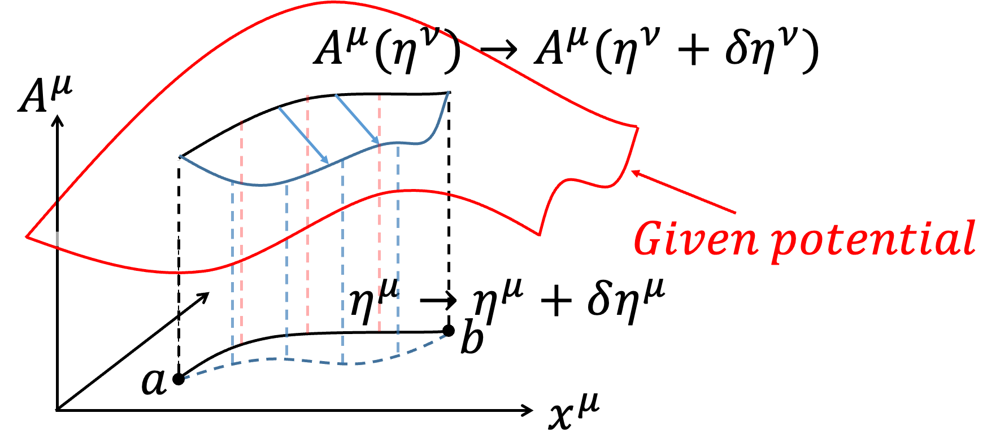
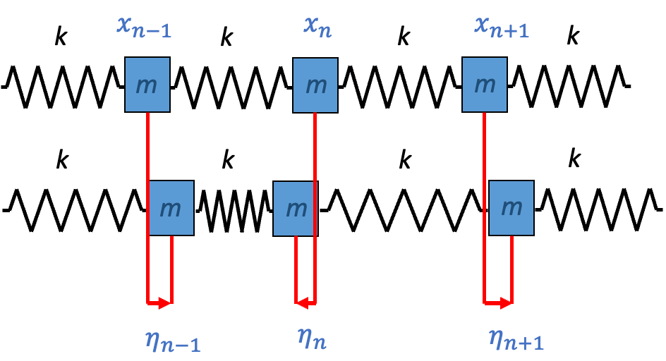
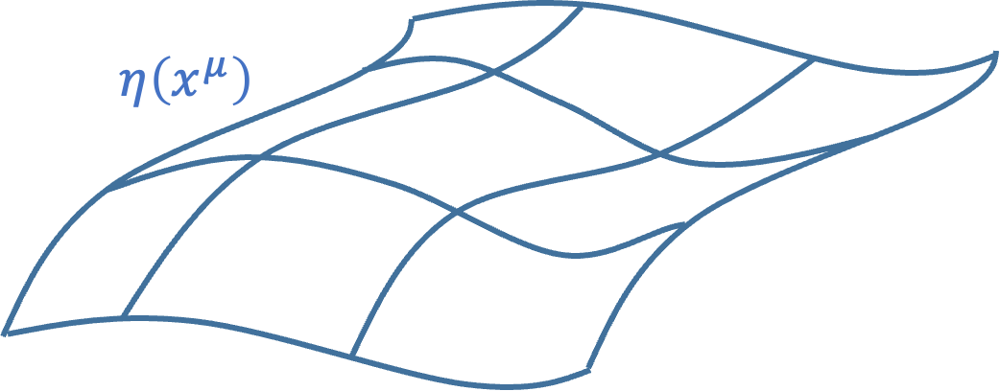
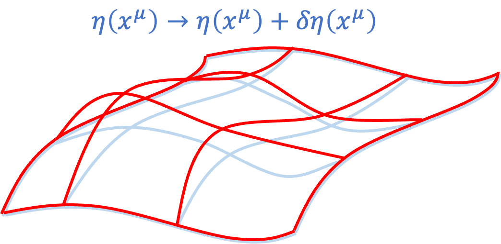

Relativistic Principle of Least Action
\(\to\)Chinese Version
\(\to\)Lecture Note-Principle of Least Action(2019)
\(\to\)Lecture Note-Principle of Least Action(2018)
Update 2024.12.03：New--An Introduction to Hilbert Variation
Update 2024.12.02：New--Toward General Relativity
- A Brief Discussion on Particle and EM Field Interaction Action
- Variation of Free Particle Action
- Variation and Equations of Motion for a Charged Particle in an EM Field
- 4-Volume \(d^4 x\) and Lagrangian Density \(\mathcal{L}\)
- Maxwell's Equations
- Gauge Invariance in Electromagnetism
- Gauge Invariance and Action Variation
- A Brief Discussion on Gauge Invariance and the Continuity Equation
- Impossibility of \(A_\mu A^\mu\) if Keeping Gauge Invariance
- A Brief Discussion on \(A_\mu A^\mu\) in Quantum Field Theory - Photon Mass
- Continuous Fields and the Wave Equation
- Classical Field Theory
- Non-uniqueness of Lagrangian Density in Field Theory
- Other Possibilities That Do Not Affect EoM
- Noether Theorem in Field Theory
- Noether Theorem and Symmetry - Spacetime and Energy-Momentum Conservation
- Toward General Relativity
- An Introduction to Hilbert Variation
In classical mechanics, to fully describe a particle, one only needs to write down its Lagrangian: $$S=\int _a^b Ldt=\int _a^b T-U dt $$ $$=\int _a^b T dt +\int _a^b -U dt =S_P+S_{PF}$$ Here, the kinetic term \(T\) can be regarded as the Action \(S_P\) of a free particle, and the potential term \(U\) is the Action \(S_{PF}\) of the interaction between the particle and the field. In electromagnetism, we learn that the field also carries momentum and energy, so the complete description of electromagnetic motion includes the Action \(S_F\) of the field: $$S=S_P+S_{PF}+S_F$$
In the relativistic case, to describe a free particle, we use the 4-displacement
$$\eta =\eta ^\mu \hat{e} _\mu =(\tau ,\overrightarrow{0} )_{porper}=(t,\overrightarrow{\eta})$$
to describe the trajectory of the particle, where \(\tau\) is the particle's proper time. Here, \(\eta ^\mu\) is used to distinguish the trajectory from spacetime (to accommodate subsequent discussions on Noether's theorem, it is necessary to rigorously distinguish between the trajectory and spacetime; the trajectory is a physical quantity, while spacetime is a coordinate system, which are different concepts). To describe the particle's velocity, we use the 4-Velocity \(U=U^\mu \hat{e} _\mu =(\gamma c,\gamma \overrightarrow{v} )={d\eta ^\mu \over d\tau} \hat{e} _\mu\), where \(\tau\) is the particle's proper time. Furthermore, \(U^\mu =U^\mu (x^\nu )\), meaning that the velocity \(U^\mu\) changes with different coordinates \(x^\nu\) in spacetime. The idea here is that a free particle moves from point a to point b in spacetime, and we calculate the extremum of the Action \(S_P\) for different paths \(\eta ^\mu\) by varying \(x^\mu\):
 $$\eta ^\mu \to \eta ^\mu +\delta \eta ^\mu $$
$$\delta \eta ^\mu (a)=\delta \eta ^\mu (b)=0$$
The Action \(S_P\) for a free particle is:
$$S_P=\int _a^b -mc^2 d\tau $$
After variation:
$$\delta S_P=\delta \int _a^b -mc^2 d\tau =-mc^2 \int _a^b \delta d\tau $$
It may seem that \(d\tau \) is unrelated to the variation \(\eta ^\mu \to \eta ^\mu +\delta \eta ^\mu\), but recall:
$$∵c^2 d\tau ^2=d\eta ^\mu d\eta _\mu $$
$$∴cd\tau =\sqrt{d\eta ^\mu d\eta _\mu}$$
Thus:
$$\delta S_P=-mc\int _a^b \delta \sqrt{d\eta ^\mu d\eta _\mu}$$
$$=-mc\int _a^b {1\over 2} {\color{red}{\delta d\eta ^\mu \cdot d\eta _\mu +d\eta ^\mu \cdot \delta d\eta _\mu} \over \sqrt{d\eta ^\mu d\eta _\mu}} $$
$$\eta ^\mu \to \eta ^\mu +\delta \eta ^\mu $$
$$\delta \eta ^\mu (a)=\delta \eta ^\mu (b)=0$$
The Action \(S_P\) for a free particle is:
$$S_P=\int _a^b -mc^2 d\tau $$
After variation:
$$\delta S_P=\delta \int _a^b -mc^2 d\tau =-mc^2 \int _a^b \delta d\tau $$
It may seem that \(d\tau \) is unrelated to the variation \(\eta ^\mu \to \eta ^\mu +\delta \eta ^\mu\), but recall:
$$∵c^2 d\tau ^2=d\eta ^\mu d\eta _\mu $$
$$∴cd\tau =\sqrt{d\eta ^\mu d\eta _\mu}$$
Thus:
$$\delta S_P=-mc\int _a^b \delta \sqrt{d\eta ^\mu d\eta _\mu}$$
$$=-mc\int _a^b {1\over 2} {\color{red}{\delta d\eta ^\mu \cdot d\eta _\mu +d\eta ^\mu \cdot \delta d\eta _\mu} \over \sqrt{d\eta ^\mu d\eta _\mu}} $$
|
Advanced: Thm.4: The variation of a scalar is independent of the indices. Recall the metric tensor \(g_{\mu \nu}\): $$g_{\mu \nu} =\hat{e} _\mu \cdot \hat{e} _\nu $$ $$g_{\mu \nu} =g_\nu \mu $$ $$g^{\mu \nu} \equiv (g_{\mu \nu} )^{-1}$$ \(g^{\mu \nu} g_{\nu \omega} = \delta ^\mu _\omega \) (Delta function, do not confuse it with the variation \(\delta\)). The metric tensor \(g_{\mu \nu}\) is an intrinsic property of spacetime (Intrinsic Property) and is independent of \(x^\mu\) (only considering special relativity here; in general relativity, it would be affected). This means that the variation with respect to \(x^\mu\) is independent of the metric \(g_{\mu \nu}\). The metric tensor can be used to raise or lower indices (Index lowering or raising): $$x^\mu =g^{\mu \nu} x_\nu $$ $$x_\mu =g_{\mu \nu} x^\nu $$ Since the variation with respect to \(x^\mu\) is independent of the metric \(g_{\mu \nu}\), we have: $$\delta x^\mu =g^{\mu \nu} \delta x_\nu$$ $$\delta x_\mu =g_{\mu \nu} \delta x^\nu $$ For a scalar, such as \(x^\mu y_\mu \), the variation is: $$\delta (x^\mu y_\mu )=\delta x^\mu \cdot y_\mu +x^\mu \cdot \delta y_\mu $$ $$=g^{\mu \nu} \delta x_\nu \cdot g_{\mu \omega} y^\omega +g^{\mu \nu} x_\nu \cdot g_{\mu \omega} \delta y^\omega $$ $$=g^{\mu \nu} g_{\mu \omega} (\delta x_\nu \cdot y^\omega +x_\nu \cdot \delta y^\omega )=g^{\color{red}{\nu \mu}} g_{\mu \omega} \delta (x_\nu y^\omega )$$ $$= \delta ^\nu _\omega \delta (x_\nu y^\omega )=\delta (x_\omega y^\omega )=\delta (x_\mu y^\mu )$$ Similarly: $$x^\mu \delta y_\mu =x_\mu \delta y^\mu $$ Therefore: $$\color{red}{\delta dx^\mu \cdot dx_\mu +dx^\mu \cdot \delta dx_\mu} $$ $$=\delta dx^\mu \cdot dx_\mu +dx_\mu \cdot \delta dx^\mu $$ $$=2\delta dx^\mu \cdot dx_\mu $$ |
In this section, we aim to explore how a charged particle moves under a given EM Field (note that "given EM Field" means we do not vary the EM Field itself). In relativistic electrodynamics, we write the 4-Potential as \(A = A^\mu \hat{e} _\mu =\left(\phi,\overrightarrow{A}\right)\), using Gaussian units here. The Action \(S_{PF}\) for the interaction of the charged particle is written as: $$S_{PF}=\int _a^b -{e \over c} A_\mu d\eta ^\mu $$ The complete description of the motion of the charged particle is given by: $$S=S_P+S_{PF}=\int _a^b -mc^2 d\tau +\int _a^b -{e\over c} A_\mu d\eta ^\mu $$ Here, we consider varying the path \(\eta ^\mu\) of the charged particle in spacetime: $$\eta ^\mu \to \eta ^\mu +\delta \eta ^\mu $$ Although we do not vary the EM Field \(A^\mu\), the potential experienced by the particle depends on the path taken. Hence, the Action for different paths will involve different values of \(A^\mu\) (meaning the change in \(A^\mu\) comes from the different paths \(\eta ^\mu\) rather than from varying \(A^\mu\)): $$A^\mu (\eta ^\mu )\to A^\mu (\eta ^\mu +\delta \eta ^\mu )=A^\mu (\eta ^\mu )+\delta A^\mu $$
|
|  |
{kind=link}
Since spacetime is equivalent under relativity, physicists use the Principle of Relativity and the Principle of Least Action to write the Action \(S\) in scalar form, ensuring that \(\delta S = 0\) in any coordinate system. The Actions we listed earlier are: $$S_P=-mc^2 \int _a^b d\tau $$ $$S_{PF}=-{e\over c} \int _a^b A_\mu dx^\mu $$ $$S=S_P+S_{PF}=-mc^2 \int _a^b d\tau -{e\over c} \int _a^b A_\mu dx^\mu $$ $$=\int _a^b -\gamma mc^2-\gamma e \phi+{e\over c} \overrightarrow{A} \cdot \gamma \overrightarrow{v} dt =\int _a^b Ldt$$ Although these Actions satisfy the scalar requirement, the Lagrangian \(L\) itself is not a scalar, as it varies under different coordinate systems. Physicists, therefore, aim to rewrite the Lagrangian \(L\) as a scalar. We define the 4-Volume \(d^4 x=dc\tau dV=dc\tau dxdydz\) and rewrite the original Action as: $$S_P=-mc^2 \int _a^b d\tau =-\int \rho_m dV c^2 \int _a^b d\tau $$ $$=-∬ \rho_m cdc\tau dV =\int -\rho_m cd^4 x $$ $$S_{PF}=-{e\over c} \int _a^b A_\mu dx^\mu =-{\int \rho_e dV \over c} \int _a^b A_\mu {dx^\mu \over d\tau} d\tau $$ $$=-{1 \over c} ∬ \rho_e A_\mu u^\mu d\tau dV =-{1 \over c^2} ∬ A_\mu J^\mu dc\tau d^4 x $$ $$=-{1 \over c^2} \int A_\mu J^\mu d^4 x $$ Here, \(J = J^\mu \hat{e} _\mu = \rho_e u^\mu \hat{e} _\mu\) is the 4-current density. Notably, \(d^4 x\) is an invariant, making it a scalar. Additionally, when we add the EM Field Action \(S_F\): $$S_F=-{1 \over 16\pi c} \int F_{\mu \nu} F^{\mu \nu} d^4 x $$ $$S=S_P+S_{PF}+S_F$$ $$=\int -\rho_m c-{1\over c^2} A_\mu J^\mu -{1 \over 16\pi c} F_{\mu \nu} F^{\mu \nu} d^4 x$$ $$ \equiv \int \mathcal{L} d^4 x $$ Since the 4-Volume \(d^4 x\) is a scalar and the Action is also a scalar, \(\mathcal{L}\) must be a scalar as well. We call \(\mathcal{L}\) the Lagrangian density. The Lagrangian density \(\mathcal{L}\) remains a scalar and is invariant in any coordinate system: $$\mathcal{L}=-\rho_m c-{1\over c^2} A_\mu J^\mu -{1 \over 16\pi c} F_{\mu \nu} F^{\mu \nu} $$
|
Advanced: \(d^4 x\) is an invariant Physical Proof Due to Time Dilation and Length Contraction being opposite effects, if \(\tau\) and \(\bar{x}\) are the proper time and proper length: $$t=\gamma \tau $$ $$x={\bar{x} \over \gamma} $$ Therefore: $$dctdx=dc\left(\gamma \tau \right)d{\bar{x} \over \gamma }=dc\tau d\bar{x}$$ Mathematical Proof Recall the Jacobian \(J\): $$dxdy=rdrdθ=J\left(r,\theta\right)drd\theta$$ Where: $$J\left(r,\theta\right)=\left| \begin{matrix} {\partial x \over \partial r} & {\partial x \over \partial \theta} \\ {\partial y \over \partial r} & {\partial y \over \partial \theta} \end{matrix} \right| =\left| \begin{matrix} {\partial rcos\theta \over \partial r} & {\partial rcos\theta \over \partial \theta} \\ {\partial rsin\theta \over \partial r} & {\partial rsin\theta \over \partial \theta} \end{matrix} \right| $$ $$=\left| \begin{matrix} { cos\theta} & { -rsin\theta} \\ { sin\theta} & { rcos\theta} \end{matrix} \right|=r $$ Similarly: $$dc\bar{t} d\bar{x}=J\left(ct,x\right)dctdx=\left| \begin{matrix} {\partial c\bar{t} \over \partial ct} & {\partial c\bar{t} \over \partial x} \\ {\partial \bar{x} \over \partial ct} & {\partial \bar{x} \over \partial x} \end{matrix} \right|dctdx$$ Recall the Lorentz transformation: $$c\bar{t} =\gamma (ct-\beta x)$$ $$\bar{x}=\gamma (x-\beta ct)$$ Substituting these back: $$dc\bar{t} d \bar{x}=\left| \begin{matrix} \gamma & -\beta \gamma \\ -\beta \gamma & \gamma \end{matrix} \right|dctdx $$ $$=\gamma ^2 (1-\beta ^2 )dctdx=dctdx$$ Thus, \(d^4 x\) is an invariant under Lorentz transformation. |
In this section, we discuss the distribution of the EM Field given a source (meaning we do not vary the distribution \(\eta^\mu\) of the source). The relevant action is:
$$S_{PF}+S_F=\int -\rho_m c-{1\over c^2} A_\mu J^\mu d^4 x +\int -{1 \over 16\pi c} F_{\mu \nu} F^{\mu \nu} d^4 x$$
To understand the distribution of the EM Field, we vary \(A^\mu\):
$$A^\mu \to A^\mu +\delta A^\mu $$
We observe whether \(J^\mu\), \(d^4 x\), or \(F^{\mu \nu}\) are affected:

$$J^\mu =\rho_e {dx^\mu \over d\tau} =J^\mu (x^\nu )$$
$$d^4 x=d^4 x(x^\nu )$$
$$F^{\mu \nu} =\partial ^\mu A^\nu -\partial ^\nu A^\mu =F^{\mu \nu} \left(A^\omega \right)$$
Only the electromagnetic tensor \(F^{\mu \nu}\) is affected by the variation \(A^\mu \to A^\mu +\delta A^\mu\):
$$F^{\mu \nu} \left(A^\omega \right)\to F^{\mu \nu} (A^\omega +\delta A^\omega )=F^{\mu \nu} \left(A^\omega \right)+\delta F^{\mu \nu} $$
Thus, the variation of \(S_{PF}\) is straightforward:
$$\delta S_{PF}=\delta \int -{1 \over c^2} A_\mu J^\mu d^4 x$$
$$ =-{1 \over c^2} \int \delta A_\mu \cdot J^\mu d^4 x $$
The variation of \(S_F\) is more complex:
$$S_F=-{1 \over 16 \pi c} \int F_{\mu \nu} F^{\mu \nu} d^4 x$$
$$\delta S_F=-{1 \over 16 \pi c} \delta \int F_{\mu \nu} F^{\mu \nu} d^4 x =-{1 \over 16 \pi c} \int \delta F_{\mu \nu} \cdot F^{\mu \nu} +F_{\mu \nu} \cdot \delta F ^{\mu \nu} d^4 x $$
Using Thm.4 (variation of scalars is independent of upper and lower indices):
$$\delta F_{\mu \nu} \cdot F^{\mu \nu} =F_{\mu \nu} \cdot \delta F ^{\mu \nu}$$
Hence, there is a factor of two:
$$\delta S_F=-{1 \over 16 \pi c} \int 2\delta F_{\mu \nu} \cdot F^{\mu \nu} d^4 x =-{1 \over 8 \pi c} \int \delta F_{\mu \nu} \cdot F^{\mu \nu} d^4 x $$
Substitute:
$$\delta S_F=-{1 \over 8 \pi c} \int \delta (\partial _\mu A_\nu -\partial _\nu A_\mu )\cdot F^{\mu \nu} d^4 x $$
$$=-{1 \over 8 \pi c} \int \delta (\partial _\mu A_\nu )\cdot F^{\mu \nu} d^4 x +{1 \over 8 \pi c} \int \delta (\partial _\nu A_\mu )\cdot F^{\mu \nu} d^4 x $$
Since \(\mu\) and \(\nu\) are dummy indices, we can swap \(\mu \leftrightarrow \nu\) in the first term:
$$\delta S_F=-{1 \over 8 \pi c} \int \delta (\partial _\color{red}{\nu} A_\color{red}{\mu} )\cdot F^\color{red}{\nu \mu} d^4 x +{1 \over 8 \pi c} \int \delta (\partial _\nu A_\mu )\cdot F^{\mu \nu} d^4 x $$
$$={1 \over 8 \pi c} \int \delta (\partial _\nu A_\mu )\cdot (-F^\nu \mu +F^{\mu \nu} ) d^4 x $$
Recall the electromagnetic tensor:
$$F^{\mu \nu} =\partial ^\mu A^\nu -\partial ^\nu A^\mu =\left(\begin{matrix}0 & -E_x & -E_y & -E_z\\ E_x & 0 & -B_z & B_y \\ E_y & B_z & 0 & -B_x \\ E_z & -B_y & B_x & 0 \end{matrix}\right)$$
Since \(F^{\mu \nu}\) is an antisymmetric tensor, \(F^\nu \mu =-F^{\mu \nu} \). Substituting:
$$\delta S_F={1 \over 8 \pi c} \int \delta (\partial _\nu A_\mu )\cdot (F^\color{red}{\mu \nu} +F^{\mu \nu} ) d^4 x ={1 \over 4 \pi c} \int \delta (\partial _\nu A_\mu )\cdot F^{\mu \nu} d^4 x $$
Using Thm.1, we can exchange \(\delta\) and \(\partial _\nu\):
$$\delta (\partial _\nu A_\mu )=\partial _\nu (\delta A_\mu )$$
$$\delta S_F={1 \over 4 \pi c} \int \partial _\nu (\delta A_\mu )\cdot F^{\mu \nu} d^4 x $$
Using the chain rule:
$$\partial _\nu (\delta A_\mu )\cdot F^{\mu \nu} =\partial _\nu (\delta A_\mu \cdot F^{\mu \nu} )-\delta A_\mu \cdot \partial _\nu (F^{\mu \nu} )$$
Splitting the integral into two parts:
$$\delta S_F={1 \over 4 \pi c} \int \partial _\nu (\delta A_\mu \cdot F^{\mu \nu} ) d^4 x -{1 \over 4 \pi c} \int \delta A_\mu \cdot \partial _\nu (F^{\mu \nu} ) d^4 x $$
| Recall the Divergence Theorem: $$\int \nabla \cdot \overrightarrow{F}dV =∮ \overrightarrow{F}\cdot d\overrightarrow{S} $$ A volume integral can be rewritten as a surface integral. Written in terms of the Levi-Civita symbol: $$\int \partial _\nu F^\nu dV =∮ F^\nu dS_\nu $$ |
| Recall Maxwell's equations in Gaussian units: $$ \nabla \cdot \overrightarrow{E}=4\pi \rho_e$$ $$ \nabla \cdot \overrightarrow{B}=0$$ $$ \nabla ×\overrightarrow{E}=-{1 \over c} {\partial \overrightarrow{B} \over \partial t}$$ $$ \nabla ×\overrightarrow{B}={4\pi \over c} \overrightarrow{J}+{1 \over c} {\partial \overrightarrow{E} \over \partial t }$$ |
| $$\partial _\nu F^{\mu \nu} =-{4\pi \over c} J^\mu \to \left( \begin{matrix} \nabla \cdot \overrightarrow{E}=4\pi \rho_e \\ \nabla ×\overrightarrow{B}={4\pi \over c} \overrightarrow{J}+{1 \over c} {\partial \overrightarrow{E}\over \partial t} \end{matrix}\right)$$ |
| $$ \partial _\omega F_{\mu \nu} +\partial _\mu F_{\nu \omega} +\partial _\nu F_{\omega \mu} =0 \to \left( \begin{matrix} \nabla \cdot \overrightarrow{B}=0 \\ \nabla ×\overrightarrow{E}=-{1 \over c} {\partial \overrightarrow{B} \over \partial t} \end{matrix}\right)$$ |
In electromagnetism, we define the relationship between the potentials \(\phi\), \(\overrightarrow{A}\), and the electric field \(\overrightarrow{E}\), and the magnetic field \(\overrightarrow{B}\): $$ \overrightarrow{E}=- \nabla \phi -{1 \over c} {\partial \overrightarrow{A}\over \partial t}$$ $$\overrightarrow{B}= \nabla ×\overrightarrow{A} $$ However, the potentials \(\phi\) and \(\overrightarrow{A}\) are not unique, and we can introduce a gauge function \(G(ct,\overrightarrow{x})\): $$\bar{\phi} =\phi +{1 \over c} {\partial G \over \partial t}$$ $$\overrightarrow{\bar{A}}=\overrightarrow{A}- \nabla G$$ The electric field \(\overrightarrow{E}\) and the magnetic field \(\overrightarrow{B}\) remain unchanged: $$\overrightarrow{\bar{E}}=- \nabla \bar{\phi}-{1 \over c} {\partial \overrightarrow{\bar{A}}\over \partial t}$$ $$=- \nabla \phi - \color{red}{\nabla {1 \over c} {\partial G \over \partial t}}-{1 \over c} {\partial \overrightarrow{A}\over \partial t}+\color{red}{{1 \over c} {\partial ( \nabla G)\over\partial t}}$$ $$=- \nabla \phi -{1 \over c} {\partial \overrightarrow{A}\over \partial t}=\overrightarrow{E}$$ $$\overrightarrow{\bar{B}}= \nabla ×\overrightarrow{\bar{A}}= \nabla ×\overrightarrow{A}- \nabla × \nabla G= \nabla ×\overrightarrow{A}=\overrightarrow{B} $$
| Note: \(\nabla × \nabla G=0\) $$( \nabla × \nabla G)_i=\varepsilon _{ijk} \partial _j \partial _k G$$ $$={1 \over 2} \varepsilon _{ijk} \partial _j \partial _k G+{1 \over 2} \varepsilon _{ijk} \partial _j \partial _k G$$ $$={1 \over 2} \varepsilon _{ijk} \partial _j \partial _k G+{1 \over 2} \varepsilon _{i\color{red}{kj}} \partial _\color{red}{k} \partial _\color{red}{j} G$$ $$={1 \over 2} \varepsilon _{ijk} \partial _j \partial _k G \color{red}{-}{1 \over 2} \varepsilon _{i\color{red}{jk}} \partial _j \partial _k G=0$$ |
| Coulomb gauge condition: Non-relativistic $$ \nabla \cdot \overrightarrow{A}=0$$ |
| Lorenz gauge condition: Relativistic, satisfies Lorentz transformation $$ \nabla \cdot \overrightarrow{A}+{1 \over c} {\partial \phi \over \partial t}=0$$ Written in scalar form: $$\partial _\mu A^\mu =0$$ Thus, it satisfies the relativistic transformation. |
In this section, we discuss how adding a gauge does not change the variation of the action, meaning that the equations of motion are unaffected by gauge changes, representing gauge invariance. When adding a gauge: $$ \bar{A} ^\mu =A^\mu +\partial ^\mu G$$ We observe which terms in the action \(S=S_P+S_{PF}+S_F\) are affected: $$S_P=-mc^2 \int _a^b d\tau =\int -\rho_m cd^4 x $$ $$S_{PF}=-{e\over c} \int _a^b A_\mu dx^\mu =-{1 \over c^2} \int A_\mu J^\mu d^4 x $$ $$S_F=\int -{1 \over 16 \pi c} F_{\mu \nu} F^{\mu \nu} d^4 x $$ Since we have already proven that \(F^{\mu \nu}\) is not affected by gauge transformations and \(S_P\) does not involve \(A^\mu\), the only affected term is \(S_{PF}\): $$\bar{S}_{PF}=-{e\over c} \int _a^b \bar{A} _\mu dx^\mu =-{1 \over c^2} \int \bar{A} _\mu J^\mu d^4 x $$ Now, let's vary \(\bar{S}_{PF}\): $$\delta \bar{S}_{PF}=-{1 \over c^2} \delta \int \bar{A} _\mu J^\mu d^4 x =-{1 \over c^2} \delta \int A_\mu J^\mu d^4 x \color{red}{-{1 \over c^2} \delta \int \partial _\mu G \cdot J ^\mu d^4 x }$$ Applying the chain rule: $$\partial _\mu G \cdot J ^\mu =\partial _\mu (GJ^\mu )-G\partial _\mu J^\mu $$ This yields: $$\delta \bar{S}_{PF}=-{1 \over c^2} \delta \int A_\mu J^\mu d^4 x \color{red}{-{1 \over c^2} { \delta \int \partial _\mu \left(GJ^\mu \right) d^4 x + {1 \over c^2} \delta \int G\partial _\mu J^\mu d^4 x} } $$ The middle term, using the Divergence Theorem: $$\delta \bar{S}_{PF}=-{1 \over c^2} \delta \int A_\mu J^\mu d^4 x \color{red}{-{1 \over c^2} {\delta \left[ ∮ GJ^\mu dS_\mu \right]}{ +{1 \over c^2} \delta \int G \left[\partial _\mu J^\mu \right] d^4 x }}$$ The middle term is zero since the variation on the boundary is zero: $$\color{red}{\delta \left[∮ GJ^\mu dS_\mu \right]=0}$$ Finally, recall the continuity equation: $${\partial \rho_e \over \partial t}+ \nabla \cdot \overrightarrow{J}=0$$ In relativistic form: $$\partial _\mu J^\mu =0$$ Thus, the last term is also zero: $$\color{red}{\delta \int G \left[\partial _\mu J^\mu \right] d^4 x =0}$$ Therefore: $$\delta \bar{S}_{PF}=-{1 \over c^2} \delta \int A_\mu J^\mu d^4 x =\delta S_{PF}$$ This shows that adding a gauge does not change the variation of the action, indicating gauge invariance.
In the previous derivation, we used the continuity equation to show that the action's variation satisfies gauge invariance, corresponding to charge conservation. In the later development of physics, the process was reversed: when we require the action to satisfy gauge invariance, we derive the continuity equation and charge conservation. The variation process is the same, with the only difference being that we enforce: $${1 \over c^2} \delta \int G[\partial _\mu J^\mu ] d^4 x =0$$ to ensure that the variation result is unaffected by the gauge, leading to: $$\partial _\mu J^\mu =0$$ By studying this, we can understand why physicists often say that the action is powerful: writing down the action allows us to derive all experimentally observed equations. However, in the actual development of the action, experiments must first obtain some or all of the equations of motion, and physicists use physical reasoning to guess the form of the action, which then allows them to derive other deeper physics. Since classical electromagnetism is fully developed, all the equations have been obtained experimentally, so deriving the variation of the action to obtain \(F^{\mu \nu}\) or Maxwell's equations seems like reverse-engineering the problem from the answer. Nevertheless, historically, physicists derived charge conservation experimentally and then rewrote it in terms of the action, linking charge conservation and gauge invariance rigorously through Noether's theorem. This is similar to how Newtonian mechanics, through the principle of virtual work, leads to the Hamilton principle in action. Physicists can then use the action to derive Newtonian mechanics, but the action framework can also describe electromagnetism and even later quantum mechanics (Feynman's path integral). The action plays a crucial role in extending physics.
If we maintain gauge invariance, we can argue that the action will not include a term like \(A_\mu A^\mu\), as the variation of \(A^\mu\) (i.e., \(A^\mu \to A^\mu +\delta A^\mu\)) would lead to changes in the equations of motion: $$S=-{1 \over c^2} \int A_\mu A^\mu d^4 x $$ Adding a gauge \(\partial ^\mu G\): $$ \bar{A} ^\mu =A^\mu +\partial ^\mu G$$ Expanding the action: $$\bar{S}=-{1 \over c^2} \int \bar{A} _\mu \bar{A} ^\mu d^4 x $$ $$=-{1 \over c^2} \int (A_\mu +\partial _\mu G)(A^\mu +\partial ^\mu G) d^4 x $$ $$=-{1 \over c^2} \int A_\mu A^\mu d^4 x -{1 \over c^2} \int 2A^\mu \cdot \partial _\mu Gd^4 x -{1 \over c^2} \int \partial _\mu G\cdot \partial ^\mu Gd^4 x $$ Since the gauge \(\partial ^\mu G\) is independent of the 4-potential \(A^\mu\), the variation \(A^\mu \to A^\mu +\delta A^\mu\) does not affect \(\partial ^\mu G\). We compare the variations of \(S\) and \(\bar{S}\): **For \(S\):** $$\delta S=-{1 \over c^2} \delta \int A_\mu A^\mu d^4 x$$ $$ =-{2 \over c^2} \int A_\mu \delta A^\mu d^4 x$$ **For \(\bar{S}\):** $$\delta \bar{S}=-{1 \over c^2} \delta \int A_\mu A^\mu d^4 x -{1 \over c^2} \delta \int 2A_\mu \partial ^\mu Gd^4 x -\color{red}{0（\partial ^\mu G has no variation）}$$ The first term is the original variation: $$\delta \bar{S}=-{2 \over c^2} \int A_\mu \delta A^\mu d^4 x -{2 \over c^2} \delta \int A^\mu \cdot \partial _\mu Gd^4 x $$ $$=-{2 \over c^2} \int (A_\mu +\partial _\mu G)\delta A^\mu d^4 x $$ Comparing, we find that they are different, which would lead to the breakdown of gauge invariance. Therefore, to maintain gauge invariance, the term \(A_\mu A^\mu\) would not appear. Of course, if one day experiments show that gauge invariance is incorrect, it might be possible to introduce an \(A_\mu A^\mu\) term.
While this content mainly discusses classical mechanics, here we briefly touch on how \(A_\mu A^\mu\) corresponds to photon mass in quantum field theory. The Klein–Gordon equation describes spin-0 particles and is derived simply from relativity, based on the 4-momentum: $$P_\mu P^\mu =m^2 c^2$$ In quantum field theory, physical quantities are rewritten as operators acting on the wave function \(\phi\): $$\hat{P} _\mu \hat{P} ^\mu \phi =m^2 c^2 \phi $$ In quantum field theory, the momentum operator is: $$\hat{P} ^\mu =i\hbar \partial ^\mu $$ Substituting: $$(i\hbar \partial _\mu )(i\hbar \partial ^\mu )\phi =m^2 c^2 \phi $$ $$-\hbar ^2 \partial _\mu \partial ^\mu \phi =m^2 c^2 \phi $$ This yields the Klein–Gordon equation: $$(\hbar ^2 \partial _\mu \partial ^\mu +m^2 c^2 )\phi =0$$ If we set \(\hbar =c=1\) (Planck units or natural units): $$(□+m^2 )\phi =0$$ This is the common form. In quantum field theory, the Lagrangian density for a spin-1 massive particle is: $$L=-{1 \over 2} \partial _\mu A_\nu \partial ^\mu A^\nu +{1 \over 2} m^2 A_\nu A^\nu (with \hbar =c=1)$$ Varying \(\delta A^\nu\) satisfies: $$\partial ^\mu \left({\partial L \over \partial \left(\partial ^\mu A^\nu \right)} \right)-{\partial L\over \partial A^\nu }=0$$ This yields: $$-\partial ^\mu (\partial _\mu A_\nu )-m^2 A_\nu =0\to \partial ^\mu \partial _\mu A_\nu +m^2 A_\nu =0$$ $$(□+m^2 ) A_\nu =0$$ This is the Klein–Gordon equation describing a spin-1 massive particle's equation of motion. We can see that \(A_\nu A^\nu\) corresponds to the photon's mass. However, the correct Lagrangian density to describe a spin-1 massless particle is not \(\mathcal{L}=-{1 \over 2} \partial _\mu A_\nu \partial ^\mu A^\nu\), but rather: $$\mathcal{L}=-{1\over 4} F_{\mu \nu} F^{\mu \nu} $$ Further details involve technical aspects of eliminating two degrees of freedom in the 4-potential to correspond to the two polarization states of the photon, but this discussion goes beyond the scope of this document.

Transitioning from a single particle to a continuous field, physicists describe a continuous field by linking an infinite number of harmonic oscillators. For an infinite number of harmonic oscillators, we can write the Lagrangian:
$$\mathcal{L}=∑_n^\infty {1 \over 2} m\eta ̇_n-{1 \over 2} k(\eta _n-\eta _(n-1) )^2 $$
Where \(\eta_n\) is the amplitude at position \(n\), and \(\eta ̇_n\) is the velocity of oscillation at position \(n\).

In the continuous field, the Lagrangian is:
$$\mathcal{L}=\int {1 \over 2} \rho\left({\partial \eta \over\partial t}\right)^2-{1 \over 2} Y\left({\partial \eta \over\partial x}\right)^2 dx $$
Where \(\rho\) is the mass density, and \(Y\) is the Young's modulus.

In three dimensions, the Lagrangian is:
$$\mathcal{L}=\int {1 \over 2} \rho(\partial _t \eta )^2-{1 \over 2} Y( \nabla \eta )^2 dV$$
It is evident that the Lagrangian density \(\mathcal{L}={1 \over 2} \rho(\partial _t \eta )^2-{1 \over 2} Y( \nabla \eta )^2\). Similarly, we can use the variational principle to obtain the equation of motion for the continuous field. The action is:
$$S=\int Ld^4 x =\int {1 \over 2} \rho(\partial _t \eta )^2-{1 \over 2} Y( \nabla \eta )^2 d^4 x $$
Varying the field amplitude \(\eta (x^\mu )\to \eta (x^\mu )+\delta \eta (x^\mu )\), the action should be an extremum:
$$\delta S=\delta \int {1 \over 2} \rho(\partial _t \eta )^2-{1 \over 2} Y( \nabla \eta )^2 d^4 x $$
$$=\int \rho\partial _t \eta *\delta (\partial _t \eta )-Y \nabla \eta *\delta ( \nabla \eta ) d^4 x $$
Exchanging the variation and differentiation:
$$=\int \rho\partial _t \eta \partial _t (\delta \eta )-Y \nabla \eta \nabla (\delta \eta ) d^4 x $$
$$=\int \rho\partial _t \eta \partial _t (\delta \eta ) d^4 x -\int Y \nabla \eta \nabla (\delta \eta ) d^4 x $$
$$=\int \partial _t (\rho\partial _t \eta \delta \eta ) d^4 x -\int \partial _t (\rho\partial _t \eta )*\delta \eta d^4 x -\int \nabla (Y \nabla \eta \delta \eta ) d^4 x +\int \nabla (Y\eta )*\delta \eta d^4 x $$
$$=\left[-\int \partial _t (\rho\partial _t \eta )*\delta \eta d^4 x +\int \nabla (Y\eta )*\delta \eta d^4 x \right]+\left[\int \partial _t (\rho\partial _t \eta \delta \eta ) d^4 x -\int \nabla (Y \nabla \eta \delta \eta ) d^4 x \right]$$
The boundary terms, using integration by parts, give:
$$=-\int \left[\rho\partial _t^2 \eta -Y \nabla ^2 \eta \right]*\delta \eta d^4 x +\left[\int \rho\partial _t \eta \delta \eta d^3 x \Big|_{t_1}^{t_2}- \int Y \nabla \eta \delta \eta d^3 x \Big|_{\partial x,\partial y,\partial z} \right]$$
$$=-\int [\rho\partial _t^2 \eta -Y \nabla ^2 \eta ]*\delta \eta d^4 x +0$$
Since \(\delta \eta\) is arbitrary, we obtain:
$$\rho\partial _t^2 \eta -Y \nabla ^2 \eta =0$$
$$ \nabla ^2 \eta ={\rho \over Y} \partial _t^2 \eta $$
Setting \(v=\sqrt{{Y\over \rho}}\):
$$\nabla ^2 \eta ={1\over v^2} \partial _t^2 \eta $$
This is the wave equation.
{kind=link}
{kind=link}
In classical field theory, the continuous field amplitude \(\eta\) is extended to classical field quantities, which can be scalar fields \(\phi\), vector fields \(V^\mu\), tensor fields \(T^{\mu\nu}\), and so on. Starting with a simple scalar field \(\phi =\phi (x^\mu )\), which is a function of spacetime, we find the equation of motion for \(\phi\) using the variational principle. The action is written as:
$$S=\int \mathcal{L}[\phi ,\partial _\mu \phi ] d^4 x $$
Assuming the Lagrangian density \(\mathcal{L}\) is a function of \(\phi\) and \(\partial _\mu \phi\), and varying \(\phi \to \phi +\delta \phi\):
$$\phi \to \phi +\delta \phi 、\partial _\mu \phi \to \partial _\mu \phi +\delta \partial _\mu \phi $$

The variation of the action is:
$$\delta S=\delta \int \mathcal{L}[\phi ,\partial _\mu \phi ] d^4 x =\int {\partial \mathcal{L} \over \partial \phi} \delta \phi +{\partial \mathcal{L}\over \partial (\partial _\mu \phi )} \delta \partial _\mu \phi d^4 x $$
$$=\int {\partial \mathcal{L} \over \partial \phi} \delta \phi -\partial _\mu \left({\partial \mathcal{L}\over \partial (\partial _\mu \phi )} \right)\delta \phi d^4 x +\int \partial _\mu \left({\partial \mathcal{L}\over \partial (\partial _\mu \phi )} \delta \phi \right) d^4 x $$
$$=\int \left[{\partial \mathcal{L} \over \partial \phi} -\partial _\mu \left({\partial \mathcal{L}\over \partial (\partial _\mu \phi )} \right)\right]\delta \phi d^4 x + ∮_{\partial V} {\partial \mathcal{L}\over \partial (\partial _\mu \phi )} \delta \phi d^3 x $$
$$=\int \left[{\partial \mathcal{L} \over \partial \phi} -\partial _\mu \left({\partial \mathcal{L}\over \partial (\partial _\mu \phi )} \right)\right]\delta \phi d^4 x +0$$
Since \(\delta \phi\) is arbitrary, for any classical physical quantity \(\phi\), it must satisfy the Euler-Lagrange equation:
$${\partial \mathcal{L} \over \partial \phi} -\partial _\mu {\partial \mathcal{L}\over \partial (\partial _\mu \phi )}=0$$
Similarly, we can return to the example of the continuous field \(\mathcal{L}={1 \over 2} \rho(\partial _t \eta )^2-{1 \over 2} Y( \nabla \eta )^2\), which satisfies:
$${\partial \mathcal{L} \over \partial \phi} -\partial _t {\partial \mathcal{L}\over\partial (\partial _t \phi ) }- \nabla {\partial \mathcal{L}\over \partial ( \nabla \phi ) }=0$$
This quickly yields:
$$-\rho\partial _t^2 \eta +Y \nabla ^2 \eta =0\to \nabla ^2 \eta ={1\over v^2} \partial _t^2 \eta $$
If we generalize the scalar field \(\phi\) to vector fields, such as 4-displacement \(x^\nu\) or 4-potential \(A^\nu\), the above variation only needs to replace \(\phi\) with \(A^\nu\), yielding:
$${\partial \mathcal{L}\over \partial x^\nu}-{d\over d\tau} {\partial \mathcal{L}\over (\partial U^\nu )}=0 \quad (Lorentz-force)$$
$${\partial \mathcal{L}\over \partial A^\nu }-\partial _\mu {\partial \mathcal{L}\over\partial (\partial _\mu A^\nu ) }=0 \quad (Field-equation)$$
Returning to the action for the electromagnetic field:
$$S=S_P+S_{PF}+S_F$$
$$=-\int P_\mu U^\mu d\tau -\int {e\over c} A_\mu U^\mu d\tau -\int {1 \over 16 \pi c} F_{\mu \nu} F^{\mu \nu} d^4 x $$
$$=\int -\rho_m c-{1 \over c^2} A_\mu J^\mu -{1 \over 16 \pi c} F_{\mu \nu} F^{\mu \nu} d^4 x $$
First, we calculate the Lorentz force:
$${\partial \mathcal{L}\over \partial x^\nu}-{d\over d\tau} {\partial \mathcal{L}\over (\partial U^\nu )}=0$$
The only terms related to \(x^\nu\) are in \(S_P\) and \(S_{PF}\), so we handle them:
$$\mathcal{L}=-P_\mu U^\mu -{e\over c} A_\mu U^\mu $$
$${\partial \left(-{e\over c} A_\mu U^\mu \right)\over\partial x^\nu} -{d\over d\tau} {\partial \left(-P_\mu U^\mu -{e\over c} A_\mu U^\mu \right)\over\partial U^\nu }=0$$
$$\to -{e\over c} U^\mu (\partial _\nu A_\mu )-{d\over d\tau} \left(-P_\nu-{e\over c} A_\nu \right)=0$$
$$\to-{e\over c} U^\mu (\partial _\nu A_\mu )+{dP_\nu \over d\tau } +{e\over c} {dA_\nu \over d\tau } =0$$
$$\to -{e\over c} U^\mu (\partial _\nu A_\mu )+{dP_\nu \over d\tau } +{e\over c} {\partial A_\nu \over \partial x^\mu } {dx^\mu \over d\tau} =0$$
$$\to -{e\over c} U^\mu (\partial _\nu A_\mu )+{dP_\nu \over d\tau } +{e\over c} U^\mu (\partial _\mu A_\nu )=0$$
$$\to {dP_\nu \over d\tau } +{e\over c} U^\mu (\partial _\mu A_\nu -\partial _\nu A_\mu )=0$$
$$\to {dP_\mu \over d\tau } =-{e\over c} U^\nu F_{\nu\mu} $$
$$\to {dP_\mu \over d\tau } ={e\over c} F_{\mu \nu} U^\nu$$
We quickly obtain the Lorentz force. Next, we handle the field equation:
$$\partial ^\mu {\partial \mathcal{L}\over \partial (\partial ^\mu A^\nu ) }-{\partial \mathcal{L} \over \partial A^\nu }=0$$
$$\partial ^\mu \left[-{1 \over 8 \pi c} F_{\alpha\beta} {\partial F^{\alpha\beta}\over \partial (\partial ^\mu A^\nu) } \right]+{1 \over c^2} J_\nu=0$$
Since:
$${\partial F^{\alpha\beta} \over \partial (\partial ^\mu A^\nu )} ={\partial (\partial ^\alpha A^\beta -\partial ^\beta A^\alpha ) \over \partial (\partial ^\mu A^\nu )}= \delta ^\alpha _\mu \delta ^\beta _\nu- \delta ^\beta _\mu \delta ^\alpha _\nu$$
We have:
$$\partial ^\mu \left[-{1 \over 8 \pi c} F_{\alpha\beta} ( \delta ^\alpha _\mu \delta ^\beta _nu- \delta ^\beta _\mu \delta ^\alpha _\nu )\right]+{1 \over c^2} J_\nu=0$$
$$\partial ^\mu \left[-{1 \over 8 \pi c} F_{\mu\nu}+{1 \over 8 \pi c} F_{\nu\mu} \right]+{1 \over c^2} J_\nu=0$$
Since \(-F_{\mu\nu}=F_{\nu\mu}\):
$$\partial ^\mu \left[{1 \over 4 \pi c} F_{\nu\mu} \right]+{1 \over c^2} J_\nu=0$$
$$\partial _\nu F^{\mu \nu} =-{4\pi \over c} J^\mu $$
{kind=link}
As mentioned earlier, adding a total time derivative term \(f=f(q,t)\) to the Lagrangian does not change the EoM. There is a corresponding extension in field theory, where \(\mathcal{L}\to \bar{\mathcal{L}} =\mathcal{L}+\partial _\mu f^\mu\). It is important to note that \(f^\mu =f^\mu (\phi ,x^\mu )\) can only be a function of \((\phi ,x^\mu )\). This can be analyzed from two perspectives. The first is the simplest, considering the boundary of variation:
$$\delta S=\delta \int (\mathcal{L}+\partial _\mu f^\mu ) d^4 x =\delta \left[\int \mathcal{L}d^4 x +\int \partial _\mu f^\mu d^4 x \right]$$
$$=\delta \int _a^b \mathcal{L}dt+\delta ∮ f^\mu d^3 S_\mu =\delta \int _a^b \mathcal{L}dt$$
Where \(\int \partial _\mu f^\mu d^4 x =∮ f^\mu d^3 S_\mu \) uses Gauss's theorem, and \(\delta ∮ f^\mu d^3 S_\mu =0\) comes from the invariance of boundary variation.
Another method is to directly expand and observe whether \(\mathcal{L}+\partial _\mu f^\mu\) satisfies:
$${\partial (\mathcal{L}+\partial _\mu f^\mu )\over\partial \phi} -\partial _\mu {\partial (\mathcal{L}+\partial _\mu f^\mu )\over\partial (\partial _\mu \phi ) }=0$$
$${\partial (\mathcal{L}+\partial _\mu f^\mu )\over\partial \phi} -\partial _\mu {\partial (\mathcal{L}+\partial _\mu f^\mu )\over\partial (\partial _\mu \phi ) }= {\partial\mathcal{L}\over\partial \phi} -\partial _\mu {\partial L\over\partial (\partial _\mu \phi ) }+{\partial (\partial _\mu f^\mu )\over\partial \phi }-\partial _\mu {\partial (\partial _\mu f^\mu )\over\partial (\partial _\mu \phi ) }$$
$$={\partial (\partial _\mu f^\mu )\over\partial \phi }-\partial _\mu {\partial (\partial _\mu f^\mu )\over\partial (\partial _\mu \phi ) }$$
Using
$$df^\mu ={\partial f^\mu \over\partial \phi }\Big|_{x^\mu } d\phi +{\partial f^\mu \over \partial x^\nu }\Big|_\phi dx^\nu $$
$$\to \partial _\mu f^\mu ={\partial f^\mu \over\partial \phi }\Big|_{x^\mu } \partial _\mu \phi +{\partial f^\mu \over\partial x^\mu } \Big|_\phi $$
Further partial differentiation:
$${\partial (\partial _\mu f^\mu )\over\partial (\partial _\mu \phi )} ={\partial f^\mu \over\partial \phi }\Big|_{x^\mu } \color{red}{ dot-cancelation-analogy}$$
Additionally,
$${\partial (\partial _\mu f^\mu )\over\partial \phi }\Big|_{x^\mu}={ \partial \over\partial \phi }\Big|_{x^\mu} \left({\partial f^\mu \over\partial \phi }\Big|_{x^\mu } \partial _\mu \phi + {\partial f^\mu \over\partial x^\mu }\Big|_\phi\right) $$
$$={ \partial \over\partial \phi }\Big|_{x^\mu} \left({\partial f^\mu \over\partial \phi }\Big|_{x^\mu } \right)\partial _\mu \phi +{\partial \over\partial \phi}\Big|_{x^\mu }\left( {\partial f^\mu \over\partial x^\mu }\Big|_\phi \right)$$
$$={ \partial \over\partial \phi }\Big|_{x^\mu } {\partial f^\mu \over\partial \phi }\Big|_{x^\mu } \partial _\mu \phi +{ \partial \over\partial x^\mu }\Big|_\phi { \partial f^\mu \over\partial \phi} \Big|_{x^\mu } $$
$$=\partial _\mu \left( {\partial f^\mu \over\partial \phi} \right)\to \partial _\mu and {\partial\over\partial \phi} commute$$
Thus,
$${\partial (\partial _\mu f^\mu )\over\partial \phi} -\partial _\mu \left({\partial (\partial _\mu f^\mu )\over\partial (\partial _\mu \phi ) }\right)=\partial _\mu {\partial f^\mu \over\partial \phi} -\partial _\mu {\partial f^\mu \over\partial \phi} =0 $$
Therefore,
$${\partial (\mathcal{L}+\partial _\mu f^\mu )\over\partial \phi }-\partial _\mu \left({ (\partial (L+\partial _\mu f^\mu )\over\partial (\partial _\mu \phi )}\right)={\partial \mathcal{L}\over\partial \phi} -\partial _\mu \left({\partial \mathcal{L}\over\partial (\partial _\mu \phi ) }\right)=0$$
Adding \(\partial _\mu f^\mu \) does not change the EoM.
This section is a conjecture by the author and is not yet confirmed to be correct
As mentioned earlier, adding a total time derivative term \(f=f(q,t)\) to the Lagrangian does not change the EoM. There is a corresponding extension in field theory, where \(\mathcal{L}\to \bar{\mathcal{L}} =\mathcal{L}+\partial _\mu f^\mu\). It is important to note that \(f^\mu =f^\mu (\phi ,x^\mu )\) can only be a function of \((\phi ,x^\mu )\). Here, we discuss the conditions under which \(f=f(q,\dot{q} ,t)\) and \(f^\mu =f^\mu (\phi ,\partial _\mu \phi ,x^\mu )\) might not change the EoM. In principle, we require:
$$ {\partial \dot{f} \over\partial q}-{d\over dt} {\partial \dot{f} \over \partial \dot{q} } =0$$
$${\partial (\partial _\alpha f^\alpha )\over\partial \phi} -\partial _\mu \left({\partial (\partial _\alpha f^\alpha )\over\partial (\partial _\mu \phi )}\right )=0)$$
Extended dot cancellation for \(f=f(q,\dot{q} ,t)\) type:
$${\partial \dot{f} \over \partial \dot{q} } ={d\over dt} {\partial f\over\partial \dot{q} }+{\partial f\over\partial q}$$
$$ {\partial \dot{f} \over\partial q}-{d\over dt} {\partial \dot{f} \over \partial \dot{q} } =0$$
$$\to {d\over dt} {\partial f\over\partial q}-{d\over dt} \left({d\over dt} {\partial f\over\partial \dot{q} }+{\partial f\over\partial q}\right)=0$$
$$\to {d^2\over dt^2} {\partial f\over\partial \dot{q} }=0$$
$$\to f=(at+b) \dot{q} +g(q,t)$$
$${\partial (\partial _\alpha f^\alpha ) \over \partial (\partial _\mu \phi )} =\partial _\alpha {\partial f^\alpha\over\partial (\partial _\mu \phi )} +{\partial f^\mu \over\partial \phi }$$
$${\partial (\partial _\alpha f^\alpha )\over\partial \phi} -\partial _\mu \left({\partial (\partial _\alpha f^\alpha )\over\partial (\partial _\mu \phi )}\right )=0$$
$$\partial _\alpha {\partial f^\alpha\over\partial \phi} -\partial _\mu \left(\partial _\alpha {\partial f^\alpha\over\partial (\partial _\mu \phi )} +{\partial f^\mu \over\partial \phi }\right)=0$$
$$\partial _\mu \partial _\alpha {\partial f^\alpha\over\partial (\partial _\mu \phi )} =0$$
$$\partial _\mu \partial _\alpha {\partial f^\alpha\over\partial (\partial _\mu A^\gamma )} =0$$
When discussing variational principles, Noether's theorem is an essential companion. Noether's theorem states that if a system's Lagrangian \(\phi\) possesses a continuous transformation \(\phi \to \phi +\delta \alpha\) that leaves the action invariant (\(\delta S=0\)), there exists a corresponding conserved current. This can be applied to:
$$Time-translation-invariance \leftrightarrow Energy-conservation$$
$$Spatial-translation-invariance \leftrightarrow Momentum-conservation$$
The generalized proof is as follows: Given the Lagrangian density \(\mathcal{L}[\phi (x^\alpha ),\partial _\mu \phi (x^\alpha ),x^\mu ]\), we now consider variations with respect to both the field \(\phi\) and spacetime coordinates \(x^\mu\):
$$x^\mu \to \bar{x} ^\mu =x^\mu +\delta x^\mu $$
$$\phi \to \bar{\phi}=\phi +\delta \phi $$
However, since \(\phi =\phi (x^\alpha )\) is a function of spacetime, after the variations of both \(\phi\) and \(x^\mu\), \(\phi (x^\alpha )\to \bar{\phi} ( \bar{x} ^\alpha )\) can be expressed as \(\bar{\phi} ( \bar{x} ^\alpha )\equiv \phi (x^\alpha )+\Delta\phi \), where:
$$\Delta\phi =\bar{\phi} ( \bar{x} ^\alpha )-\phi (x^\alpha )$$
$$=\bar{\phi} ( \bar{x} ^\alpha )-\phi ( \bar{x} ^\alpha )+\phi ( \bar{x} ^\alpha )-\phi (x^\alpha )$$
$$=\delta \phi +{\partial \phi \over \partial x^\alpha } \delta x^\alpha$$
Noether's theorem examines the difference in the action after variation:
$$\delta S=\delta \int \mathcal{L}[\phi (x^\alpha ),\partial _\mu \phi (x^\alpha ),x^\mu ] d^4 x $$
$$=\int \mathcal{L}[\bar{\phi} ( \bar{x} ^\alpha ),\partial _\mu \bar{\phi} ( \bar{x} ^\alpha ), \bar{x} ^\mu ] d^4 x -\int \mathcal{L}[\phi (x^\alpha ),\partial _\mu \phi (x^\alpha ),x^\mu ] d^4 x $$
It is clear that even the integral's 4-volume \(d^4 \bar{x}\) changes. Consider the differential product:
\(\delta S=\delta \int \mathcal{L}d^4 x =\int \delta\mathcal{L} d ^4 x +\int \mathcal{L}\delta d^4 x \)
The first term, \(\delta \mathcal{L}\), must be handled with care:
$$\delta \mathcal{L}=\mathcal{L}[\bar{\phi} ( \bar{x} ^\alpha ),\partial _\mu \bar{\phi} ( \bar{x} ^\alpha ), \bar{x} ^\mu ]-\mathcal{L}[\phi (x^\alpha ),\partial _\mu \phi (x^\alpha ),x^\mu ]$$
$$=\mathcal{L}[\bar{\phi} ( \bar{x} ^\alpha ),\partial _\mu \bar{\phi} ( \bar{x} ^\alpha ), \bar{x} ^\mu ]-\mathcal{L}[\phi ( \bar{x} ^\alpha ),\partial _\mu \phi ( \bar{x} ^\alpha ), \bar{x} ^\mu ]+\mathcal{L}[\phi ( \bar{x} ^\alpha ),\partial _\mu \phi ( \bar{x} ^\alpha ), \bar{x} ^\mu ]-\mathcal{L}[\phi (x^\alpha ),\partial _\mu \phi (x^\alpha ),x^\mu ]$$
$$={\mathcal{L}[\phi +\delta \phi ,\partial _\mu \phi +\delta (\partial _\mu \phi ), \bar{x} ^\mu ]-L[\phi ,\partial _\mu \phi , \bar{x} ^\mu ]}+{\mathcal{L}[\phi ,\partial _\mu \phi , \bar{x} ^\mu ]-L[\phi ,\partial _\mu \phi ,x^\mu ]}$$
$$={{\partial \mathcal{L}\over\partial \phi} \delta \phi +{\partial \mathcal{L}\over\partial (\partial _\mu \phi )} \delta (\partial _\mu \phi )}+{{\partial \mathcal{L}\over \partial x^\mu } \delta x^\mu }$$
Using \(\partial _\mu \) to bring to the front:
$$={{\partial \mathcal{L}\over\partial \phi} \delta \phi -\partial _\mu \left({\partial \mathcal{L}\over\partial (\partial _\mu \phi )} \right)\delta \phi +\partial _\mu \left({\partial \mathcal{L}\over\partial (\partial _\mu \phi )} \delta \phi \right)}+{{\partial \mathcal{L}\over \partial x^\mu } \delta x^\mu }$$
Note that \(\left[{\partial \mathcal{L}\over\partial \phi} -\partial _\mu \left({\partial \mathcal{L}\over\partial (\partial _\mu \phi )} \right)\right]\delta \phi\) is the Euler-Lagrange equation, which equals zero. Therefore:
$$\delta \mathcal{L}=\partial _\mu \left({\partial \mathcal{L}\over\partial (\partial _\mu \phi )} \delta \phi \right)+\partial _\mu \mathcal{L}*\delta x^\mu $$
The second term, \(\delta d^4 x\), involves the Jacobian:
$$\int \mathcal{L}\delta d^4 x =\int \mathcal{L}d^4 \bar{x} -\int \mathcal{L}d^4 x $$
$$d^4 \bar{x}=J\left({\partial \bar{x} ^\mu \over\partial x^\nu }\right) d^4 x$$
\(J\left({\partial \bar{x} ^\mu \over\partial x^\nu }\right)\) is the Jacobian determinant:
$${\partial \bar{x} ^\mu \over\partial x^\nu }={\partial (x^\mu +\delta x^\mu )\over\partial x^\nu }= \delta ^\mu _\nu +\partial _\nu \delta x^\mu $$
The Jacobian determinant is calculated as:
$$J\left({\partial \bar{x} ^\mu \over\partial x^\nu }\right)=1+\partial _\mu \delta x^\mu $$
So:
$$\int \mathcal{L}\delta d^4 x =\int \mathcal{L}*\partial _\mu \delta x^\mu d^4 x $$
Combining the two terms:
$$\delta S=\delta \int \mathcal{L}d^4 x =\int \left[\partial _\mu \left({\partial \mathcal{L}\over\partial (\partial _\mu \phi )} \delta \phi \right)+\partial _\mu \mathcal{L}*\delta x^\mu \right] d^4 x +\int \left[\mathcal{L} *\partial _\mu \delta x^\mu \right] d^4 x $$
$$=\int \partial _\mu \left({\partial \mathcal{L}\over\partial (\partial _\mu \phi )} \delta \phi \right)+\partial _\mu (\mathcal{L}\delta x^\mu ) d^4 x $$
$$=\int \partial _\mu \left({\partial \mathcal{L}\over\partial (\partial _\mu \phi )} \delta \phi +\mathcal{L}\delta x^\mu \right) d^4 x $$
$$=\int \partial _\mu \left({\partial \mathcal{L}\over\partial (\partial _\mu \phi )} \Delta\phi -\left({\partial \mathcal{L}\over\partial (\partial _\mu \phi )} \partial _\alpha \phi - \delta ^\mu _\alpha \mathcal{L}\right)\delta x^\alpha \right) d^4 x$$
Set
$$\left(\begin{matrix} \delta x^\alpha \\ \Delta\phi \end{matrix}\right)=\varepsilon\left(\begin{matrix} Χ^\alpha \\ \Psi \end{matrix}\right)$$
\(Χ^\alpha\) and \(\Psi\) are symmetry generators:
$$\delta S=\varepsilon \int \partial _\mu \left({\partial \mathcal{L}\over\partial (\partial _\mu \phi )} \Psi-\left({\partial \mathcal{L}\over\partial (\partial _\mu \phi )} \partial _\alpha \phi - \delta ^\mu _\alpha \mathcal{L}\right) Χ^\alpha \right) d^4 x =0$$
Since \(\varepsilon \) is arbitrary:
$$\partial _\mu \left({\partial \mathcal{L}\over\partial (\partial _\mu \phi )} \Psi-\left({\partial \mathcal{L}\over\partial (\partial _\mu \phi )} \partial _\alpha \phi - \delta ^\mu _\alpha \mathcal{L}\right) Χ^\alpha \right)\equiv \partial _\mu N^\mu =0$$
Define the Noether current:
$$N^\mu \equiv {\partial \mathcal{L}\over\partial (\partial _\mu \phi )} \Psi-\left({\partial \mathcal{L}\over\partial (\partial _\mu \phi )} \partial _\alpha \phi - \delta ^\mu _\alpha \mathcal{L}\right) Χ^\alpha $$
Where \({\partial \mathcal{L}\over\partial (\partial _\mu \phi )}\) corresponds to the conserved current for the symmetry transformation \(\Psi\) of the field \(\phi\), and \(\left({\partial \mathcal{L}\over\partial (\partial _\mu \phi )} \partial _\alpha \phi - \delta ^\mu _\alpha \mathcal{L}\right)\) corresponds to the conserved current under the transformation \(Χ^\alpha\) of spacetime \(x^\mu\).
For vector fields \(\alpha^\nu\):
$$N^\mu \equiv {\partial \mathcal{L}\over\partial (\partial _\mu \alpha^\nu )} \Psi^\nu-\left({\partial \mathcal{L}\over\partial (\partial _\mu \alpha^\nu )} \partial _\alpha \alpha^\nu- \delta ^\mu _\alpha \mathcal{L}\right) Χ^\alpha $$
When discussing spacetime symmetry, we fix the field \(\phi \) such that it is unaffected by variations (\(\Psi=0\)). We are left with:
$$\partial _\mu \left[\left({\partial \mathcal{L}\over\partial \left(\partial _\mu \phi\right) } \partial _\alpha \phi - \delta ^\mu _\alpha L \right) Χ^\alpha \right]=0$$
We define the energy-momentum tensor \(T^{\mu\nu}\):
$$T^{\mu\nu}\equiv {{\partial L}\over{\partial \left( \partial _\nu \phi \right)}} \partial ^\mu \phi -\eta ^{\mu\nu} L$$
The conservation current \(\partial _\nu T^{\mu\nu}=0\) represents:
$$\partial _\nu T^{0\nu}=0 \text{ Energy conservation}$$
$$\partial _\nu T^{i\nu}=0 \text{ Momentum conservation}$$
In relativity, the energy-momentum tensor for a free particle is:
$$T^{\mu\nu}\equiv mU^\mu U^\nu$$
For a classical particle, returning to non-relativistic terms, the trajectory \(q\) only depends on \(t\):
$$T^{\mu\nu}=T^{00}={\partial L\over \partial \dot{q} } \dot{q} -L=H$$
\(T^{00}\) is the Hamiltonian, representing energy conservation:
$$\partial _\nu T^{0\nu}=\partial _0 T^{00}={dH \over dt}=0$$
The energy does not change with time!
Classical Noether theorem can be stated as:
| $$Classical Non-relativistic$$ | $$Relativistic$$ |
| $$S=\int Ldt $$ | $$S=\int \mathcal{L}d^4 x$$ |
| $$N\equiv {\partial L\over\partial \dot{q} _i } Q_i-\left({\partial L\over\partial \dot{q} _i } \dot{q} _i-L\right)T$$ | $$N^\mu \equiv {\partial \mathcal{L}\over\partial (\partial _\mu \alpha^\nu ) } \Psi^\nu-\left({\partial \mathcal{L}\over\partial (\partial _\mu \alpha^\nu ) } \partial _\alpha \alpha^\nu- \delta ^\mu _\alpha L\right) Χ^\alpha $$ |
The foundations of classical field theory are electromagnetism and general relativity. Classical electromagnetism, due to its linear properties, is often used as a testing paradigm for many physical theories. It serves as the foundational demonstration for the relativistic principle of least action, and quantum field theory was initially pioneered by quantum electrodynamics.
On the other hand, general relativity successfully integrates gravitational effects into the curvature of spacetime through the equivalence principle and the generalized principle of relativity, providing new insights into the physical reality of spacetime. Similarly, Einstein's field equations can also be derived through the variation of the Hilbert-Einstein action.
The Hilbert-Einstein action, formulated by Hilbert in 1915 almost simultaneously with Einstein, derives Einstein's field equations. The core mathematical model of general relativity is (pseudo-)Riemannian geometry. In simple terms, it uses a manifold's tangent bundle with a point-wise variable metric \(g_{\mu\nu}\), endowing it with a new structure distinct from the flat Euclidean space. This constitutes an important branch of non-Euclidean geometry.
The Hilbert-Einstein action is expressed as: \[ S = \int \mathcal{L} \sqrt{-g} \, d^4x = \frac{c^4}{16\pi G} \int R \sqrt{-g} \, d^4x + \int \mathcal{L}_M \sqrt{-g} \, d^4x \] where: \[ \mathcal{L} = \left( \frac{c^4}{16\pi G} R + \mathcal{L}_M \right) \sqrt{-g} = \left( \frac{1}{2\kappa} R + \mathcal{L}_M \right) \sqrt{-g} \] \(R = g^{\mu\nu} R_{\mu\nu} = g^{\mu\nu} \delta^\beta_\alpha R^\alpha_{\mu\beta\nu}\) is the Ricci scalar, \(R_{\mu\nu}\) is the Ricci curvature tensor, \(R^\alpha_{\mu\beta\nu}\) is the Riemann curvature tensor, \(g = \det(g_{\mu\nu})\), and \(\mathcal{L}_M\) is the Lagrangian density of matter.
The curvature tensor \(R^\alpha_{\mu\beta\nu}\) is defined as: \[ R^\rho_{\sigma\mu\nu} = \partial_\mu \Gamma^\rho_{\nu\sigma} - \partial_\nu \Gamma^\rho_{\mu\sigma} + \Gamma^\rho_{\mu\lambda} \Gamma^\lambda_{\nu\sigma} - \Gamma^\rho_{\nu\lambda} \Gamma^\lambda_{\mu\sigma} \] where \(\Gamma^\rho_{\nu\sigma}\) is the tangent connection, commonly referred to as the Christoffel symbol in introductory general relativity textbooks. It can be understood as describing the variation of basis vectors at different points in a non-flat coordinate system.
Interestingly, the tangent connection \(\Gamma^\rho_{\nu\sigma}\) and the curvature tensor \(R^\alpha_{\mu\beta\nu}\) hold a similar status in mathematical language to the electromagnetic field's \(A_\sigma\) and \(F_{\beta\mu}\). In fact, by "hiding" the first two indices of the tangent connection \(\Gamma^\rho_{\nu\sigma}\) and the curvature tensor \(R^\alpha_{\mu\beta\nu}\), we can express them as: \[ \Gamma^\rho_{\nu\sigma} = \left(\Gamma^\rho_\nu \right)_\sigma = \mathbf{\Gamma}_\sigma \leftrightarrow A_\sigma \] \[ R^\alpha_{\mu\beta\nu} = \left(R^\alpha_\mu \right)_{\beta\nu} = \mathbf{R}_{\beta\nu} \leftrightarrow F_{\beta\nu} \]
The first two indices are not vector indices but "Lie algebra indices." Readers who have the opportunity to study gauge theory (or Yang-Mills theory) can delve deeper into how electromagnetic interactions \(U(1)\), weak interactions \(SU(2)\), and strong interactions \(SU(3)\) are unified under the principal connection.
In fact, one can explore the similarities between general relativity and gauge theory or refer to Nobel laureate Chen-Ning Yang's seminal paper 10.1103/PhysRevD.12.3845, the popular science article "Chen-Ning Yang and Modern Mathematics," or Singer's article in "The Mathematical Heritage of Hermann Weyl (1988, American Mathematical Society)."
Within the framework of traditional general relativity, the connection \(\Gamma^\rho_{\nu\sigma}\) adopts the assumptions of "metric compatibility" and "torsion-free." The former, "metric compatibility," essentially means that the metric remains unchanged during "parallel transport" along the connection \(\Gamma^\rho_{\nu\sigma}\): \[ \nabla_\beta g_{\mu\nu} = g_{\mu\nu;\gamma} = g_{\mu\nu,\gamma} - g_{\alpha\nu} \Gamma^\alpha_{\mu\gamma} - g_{\alpha\mu} \Gamma^\alpha_{\nu\gamma} = 0 \] In simpler terms, the length of an object does not change when transported from point A to point B.
The latter, "torsion-free," assumes that the two lower indices of the connection \(\Gamma^\rho_{\nu\sigma}\) are symmetric: \[ \Gamma^\rho_{\nu\sigma} = \Gamma^\rho_{\sigma\nu} \] Mathematically, there is a theorem that proves that given a metric distribution, the torsion-free connection \(\Gamma^\rho_{\nu\sigma}\) is uniquely determined. Readers interested in the details can refer to Theorem 6.6 in Loring W. Tu's book Differential Geometry: Connections, Curvature, and Characteristic Classes.
These two conditions lead to the relationship between the connection and the metric: \[ \Gamma^\alpha_{\mu\gamma} = \frac{1}{2} g^{\alpha\nu} \left( g_{\nu\mu,\gamma} + g_{\nu\gamma,\mu} - g_{\mu\gamma,\nu} \right) \] This indicates that the connection \(\Gamma^\rho_{\nu\sigma}\) is related to the first derivative of the metric. Furthermore, it can be shown that \(R^\alpha_{\mu\beta\nu}\), \(R_{\mu\nu}\), and \(R\) are related to the second derivative of the metric.
The gravitational Lagrangian density \(L_G\) is expressed as: \[ L_G = \frac{c^4}{16\pi G} R \sqrt{-g} = L_G \left( g_{\mu\nu}, g_{\mu\nu,\alpha}, g_{\mu\nu,\alpha\beta} \right) \] Hilbert derived Einstein's field equations through variation with respect to the metric. However, from this perspective, \(L_G\) depends on the second derivative of the metric.
As mentioned earlier, the Ostrogradsky instability implies that \(L\) should depend only on the first derivative of the field; otherwise, it may lead to unbounded energy. In the next section, we will use the Palatini variation, treating the connection field and the metric field as independent fields and varying them separately, which leads to the same conclusions.
In this case, since the connection field and the metric field are independent, \(R_{\mu\nu}\) only involves the first derivative of the connection. Therefore, \(L_G\) can be written as: \[ L_G = \frac{c^4}{16\pi G} g^{\mu\nu} R_{\mu\nu} \sqrt{-g} = L_G \left( g^{\mu\nu}, \Gamma^\alpha_{\mu\gamma}, \Gamma^\alpha_{\mu\gamma,\beta} \right) \] This safely avoids the problem of second derivatives.
Postscript
I would like to express my gratitude to my two Teachers at National Tsing Hua University: Professor Kuo-An Wu and Professor Ding-Yi Chou. Professor Wu taught me theoretical mechanics during my undergraduate studies, while Professor Chou guided me through classical mechanics and general relativity. Their passion for teaching and dedication allowed me to appreciate the beauty of classical physics. =)
Index
About me
Contact: